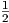
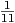
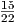
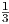
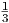
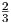

MATP6620/ISYE6760 Combinatorial Optimization & Integer Programming
Homework 1 Solutions
Due: Friday, January 27, 2017.
Penalty for late homeworks: 10% for each day or part of a day.
Questions 1–5 of this homework are concerned with a knapsack problem with 20 objects,
A link to the data can be found in question 1 of the online version of this homework. In your initial formulation use variables xj to indicate whether object j is used.
You will solve this problem using AMPL and CPLEX. The packages are available on LMS. More on these packages can be found at http://www.rpi.edu/~mitchj/ampldetails.html
Solution: Optimal solution to the relaxation is fractional:
Solution: Taking x9 = x20 = 1, other xi = 0 is feasible with value 35.
for subsets C ⊆{1,…,20}, where ∑ j∈Caj > b. The ampl code for cover constraints is included in the model file, along with one commented-out line in the data file.
Solution:
subject to cover3{i in 1..n-2, j in i+1..n-1, k in j+1..n}:
x[i] + x[j] + x[k] <= 2;
Solution: The solution is still x1 = x4 = x13 = ,x11 = ,x20 = 1 with value 41.
Solution: We can lift cover constraints: given a cover constraint
if another index satisfies ai ≥ max{aj,ak,al} then we can extend the inequality to
This can be captured using the ampl command
With the addition of this constraint, the solution has value 35, with three nonzero components, namely: x9 = 1, x13 = , x20 = . This proves the solution given in question 2 is optimal, since the objective function coeffients are all integer.
The same solution can be found by adding the valid constraint ∑ i=120xi ≤ 2. This constraint is valid because at most two of the binary xi can be positive.
Given a graph G = (V,E), does there exist a partition of the edges E into two sets E1 and E2 such that neither E1 nor E2 contains a triangle?
Can you find a feasible solution to the LP relaxation of your formulation?
Solution: Introduce binary variables x ∈ B|E| with
We can prevent triangles in E1 or E2 with the constraints
for all triangles {e,f,g}.
Taking xe = 0.5 for all edges e ∈ E gives a feasible solution to the LP relaxation.
| John Mitchell |
| Amos Eaton 325 |
| x6915. |
| mitchj at rpi dot edu |
| Office hours: Tuesdays 2–3pm, Wednesdays 11am–1pm. |